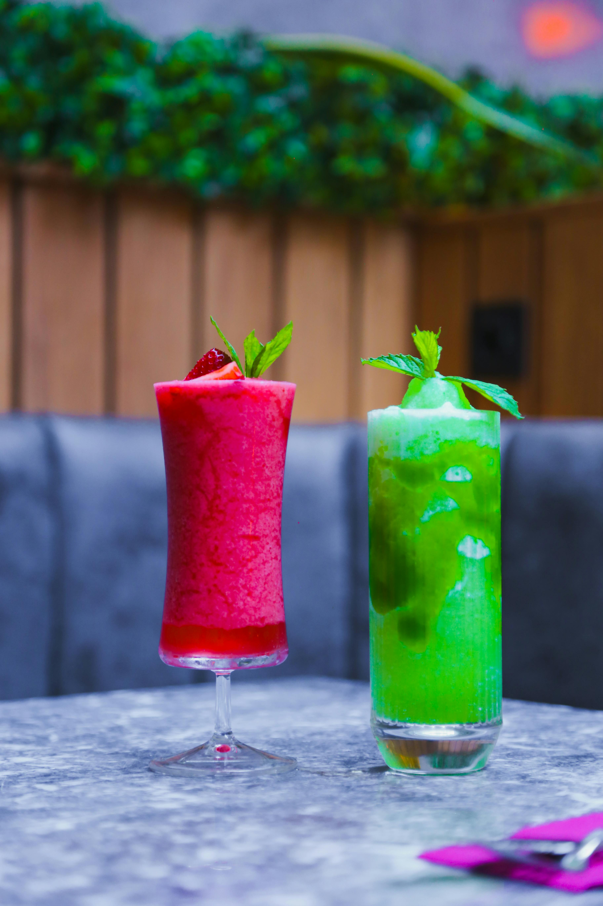

Refreshing Smoothies
Discover our collection of nutritious and delicious smoothie recipes!

Berry Blast Smoothie
Ingredients:
- 1 cup mixed berries
- 1 banana
- 1 cup yogurt
- 1 cup milk
- 1 tbsp honey
- Ice cubes
Instructions:
- Add all ingredients to blender
- Blend until smooth
- Add more milk if needed
- Pour and enjoy!

Tropical Green Smoothie
Nutrition: Rich in vitamins A, C, K, and iron. Great for energy and digestion!
Ingredients:
- 2 cups spinach
- 1 cup mango chunks
- 1/2 pineapple
- 1 banana
- 1 cup coconut water
- 1 tbsp chia seeds
Instructions:
- Add spinach and coconut water to blender
- Blend until smooth
- Add remaining ingredients
- Blend until creamy
Pro Tips:
- Blend greens first for smoother texture
- Use frozen mango for thickness
- Add mint leaves for fresh flavor